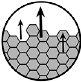

vs.
Semen

FaceSemen vs. Semen
| Semen | FaceSemen | |
| pH | 7.7* | 7.2 |
| Ions |

|
|
| Citrate |
|
|
| Saccharide |
|
|
| Protein |
|
|
| Sperm |
|

|
| Brightum |
|
|
| Appearance |
Translucent white |
Translucent white |
A Semen facial may be a myth,
is definitely not one.
Semen
The scientific mission to reveal the composition of semen can be dated back to the 16th century. We now know that semen is a unique fluid that not only carries the magic sperm, but also many other chemical substances. Citrate, Ions (Ca, Cl, K, Mg, Na, Zn), saccharides (carbohydrates) and proteins are the most essential and abundant substances of semen fluid.
FaceSemen
Inspired by the essence, FaceSemen uses citrate, ions, saccharides and proteins to create a unique nourishing fluid for visibly healthy, smooth, even and glowing skin.
No sperm is found in FaceSemen, but multiple bioactive compounds and infused Brightum Technology which revives, revitalizes and rejuvenates skin.
5 Chemistry Facts About FaceSemen

FaceSemen is a bold, creative and potent youth-boosting miracle. Its true essence is crystalized by decades of scientific expertise and the never-ending quest for the most coveted innovation. Each ingredient is meticulously selected, combining all to achieve an ageless harmony that ultimately nourishes and rejuvenates skin. It delivers an exquisite and sensational experience that is fully indulgent with potency.

Brightum
Technology

Brightum, a unique youth-boosting bioactive that unleashes the ultimate resilient power of marine polysaccharides. Its potency comes from the blend of millions of precise saccharide molecules of the right size, compositional trait and content of sulfate. They all work together simultaneously to target multiple key aging factors.
In-vitro studies suggest that Brightum enhances skin fitness by promoting multiple cellular and molecular functions of several skin-related cells. Significant improvement in hydration, microreliefs, dullness, pigmentation, wrinkle and fine lines were observed in the clinical studies.
Brightum
Technology
Revitalize skin
Improve skin
hydration
Reinforce
skin defense

Even skin tone &
revive dullness

Soften
fine lines &
wrinkles

Ions

Ions are important physiological regulators of Semen. For example, Calcium (Ca), magnesium (Mg), potassium (K), sodium (Na) and Zinc (Zn) are important ions found in semen. Calcium has been shown as an important regulator of sperm motility and fertilization. Other ions are critical elements that constitute the buffering environment for sperm.
Ions are unique components of FaceSemen. Ca, Mg, K, Na, Zn and many other minerals and trace elements are retrieved from Dead Seawater. They are carefully formulated as key ingredients not only for buffering the bioactive ingredients of Brightum Technology, but also serve as a natural conditioning that exfoliates and revitalizes skin cells.
NMFs
(sugars)
Acids
Natural moisturizing factor (NMF) is a group of substances naturally present on the skin that allow the skin to remain moisturized. NMFs are critical to the skin’s barrier function. A well hydrated skin is better prepared to fight against the external aggregations and pollutants and therefore, delaying the aging process.
Extensive scientific studies have revealed that the common NMFs include PCA (pyrrolidone carboxylic acid), amino acids (glycine), lactate, urea, saccharides (sugars) and ions. Many of these compounds also exist in Semen.
Inspired by this naturally-existing skin delicacy, FaceSemen is specially formulated by leveraging the NMFs. These ingredients improve skin’s barrier function and help skin stay intact, supple, strong and healthy. This also prepares a moisturized skin to absorb the best of Brightum Technology.
What’s inside of FaceSemen and Semen that serves as NMFs?
FaceSemen is formulated by using several NMFs or components of NWFs. Intriguingly, some of these ingredients exist in semen as well. Each ingredient is meticulously formulated into FaceSemen to assure the advanced quality and efficacy.

| Natural NMF | Semen | FaceSemen |
|---|---|---|
| Ions | |
Dead Sea Salt ExtractThe ions used to formulate FaceSemen are from Dead Seawater extract. These naturally – existing ions serve as NMFs. |
| Natural NMF | Semen | FaceSemen |
|---|---|---|
| Saccharides (sugars) |
|
FructoseFructose is a type of sugar naturally existing in many things such as honey and fruits. It is also abundant in semen. While fructose serves as an important source of energy for sperm, fructose functions as NMF in the FaceSemen formula. |
| Natural NMF | Semen | FaceSemen |
|---|---|---|
| PCA | |
Sodium PCAPCA is a naturally occurring acid of human skin and a part of NMFs. Its sodium salt format Sodium PCA is used to formulate FaceSemen. When Sodium PCA dissolves in water, PCA is generated to serve as NMF that retains skin’s mechanical strength and water homeostasis. |
| Natural NMF | Semen | FaceSemen |
|---|---|---|
| Amino Acids | |
Amino AcidsGlycine is one of the 22 amino acids essential to our lives. Glycine is the most abundant amino acid found in skin. It also exists in semen. Glycine is used to formulate FaceSemen to serve as NMF. |
| Natural NMF | Semen | FaceSemen |
|---|---|---|
| Lactate | |
Sodium LactateLactate is the negatively – charged ion portion of lactic acid. It is naturally generated within our bodies to support normal physiological functions and to serves as NMF to retain skin’s water hemostasis. Lactate is also found in semen. Sodium lactate, which contains lactate is used to formulate FaceSemen to serve as NMF. |
| Natural NMF | Semen | FaceSemen |
|---|---|---|
| Urea | |
Urea
Urea is a natural metabolic byproduct generated in our bodies. Normally, a limited amount of urea is present on our skin to enhance the skin’s natural moisturizing capability. Urea is also found in semen. FaceSemen is formulated by using a limited amount of urea to help the skin stay hydrated and healthy in its natural way. Solid scientific studies demonstrate that urea is a safe efficient skincare ingredient which retains the skin’s water hemostasis. |
- Ions
- Saccharides
- PCA
- Amino Acids
- Lactate
- Urea
Bioactive
Compounds


FaceSemen incorporates additional bioactive compounds to further potentiate its age – defying power. Each compound is exquisitely selected based on its extensive history of recognized safety and potency. The youth-boosting legacy continues through the unique blend of all. It is truly a rejuvenating potion that ultimately restores the skin’s harmony.
Many of these ingredients are also found in semen and serve as critical components.
What are
the Bioactive Compounds
in FaceSemen?
Niacinamide
Niacinamide is a form of Vitamin B3. Scientific evidence suggest that Niacinamide offers multiple skin benefits. It relieves signs of fatigue, lines, wrinkles, dullness and discoloration. Niacinamide also strengthens the epidermis to better fight against external environmental damage such as UV and pollutants.
A semen component? No
Inositol
Inositol naturally exists within our bodies. It mediates intracellular signal transduction to maintain the normal cellular function. Inositol not only supports the maintenance of normal skin function, but also gives a soothing effect to the skin.
A semen component? Yes
Sodium Hyaluronate (High molecular weight)
Hyaluronic acid (HA) plays a pivotal role in skin architecture and hydration. HA remains as high molecular weight (large) native polymer in fetal and supple skin while degraded into smaller-sized fragments in aged skin due to oxidative stress.
The sodium salt of high-molecular-weight (native-like) HA is used in the formula for many reasons. Scientific evidence indicates that the high molecular weight of HA is likely to promote regenerative healing of skin while low/medium molecular weight HA is more likely to promote skin inflammation.
Although high molecular weight HA doesn’t easily penetrate the skin, they sit on the skin surface, bind with water, and interact with natural moisturizing factors to retain the skin moisture, providing a unique skin barrier. In addition, high molecular weight HA may also promote the regenerative healing process of damaged skin without introducing risk for inflammation.
A semen component? No
Citrate from citric acid and
monosodium citrate
Citrate exists in a variety of fruits and vegetables such as limes and blackberries, citrate is also abundant in semen. Citric acid and monosodium citrate are used in the formula to promote skin exfoliation and skin cell turnover.
A semen component? No
Collagen
Collagen is a naturally-existing structure protein present in various connective tissues in our bodies. The overall collagen content of our skin declines as we age, in turn this results in many signs of aged skin.
Unfortunately, topically applied collagen doesn’t penetrate the skin to build the content or stimulate new collagen synthesis. Collagen is used in the formula for a different reason. It serves as a natural & safe hydrating factor that not only moisturize the skin but also works with other ingredients such as high molecular weight HA to create a unique hydrating barrier for skin.
A semen component? Yes
- Niacinamide
- Inositol
- HMW Sodium Hyaluronate
- Citrate
- Collagen
Buffer


years of safety data supporting their use.
oxidization of bioactive ingredients.
of bioactive ingredients.
A buffering environment was created to protect the integrity of the bioactive ingredients. It is meticulously formulated not only to minimize potential adulteration/damage caused by microorganisms, normal oxidization, or advertent contamination during the use, but also to maximize a safe, smooth and delightful user experience. Each ingredient has been safely used for decades, with years of safety data supporting their use. An enormous amount of scientific studies was also referenced to assure the safety, quality and efficacy.
What are the buffer ingredients in FaceSemen?
A brief review of function and safety
of buffer ingredients.
- Glycerin
solvent & lubricant - Sclerotium Gum/ Xanthan Gum
thickening/viscosity controlling agent and stabilizer - Pentylene Glycol
solvent, conditioning agent and humectant - Polysorbate 20
surfactant, emulsifier and stabilizer - Tetrasodium Glutamate Diacetate
chelating agent that prevent adulteration from microbes - Benzyl Alcohol
natural organic compound that inhibits microbes - Dehydroacetic acid
organic compound that inhibits microbes - Sodium Benzoate
natural compound that inhibits microbes - Sodium Hydroxide
pH neutralizer
Glycerin
Function
Glycerin is a naturally-existing, colorless, viscous and non-toxic organic compound. It is widely used in food, pharmaceutical and personal care preparations. Glycerin is infused to improve the smoothness of the formula. In addition, glycerin also functions as a solvent (liquid to dissolve many compounds) and humectant (substance to keep things moisturized).
SafetyGlycerin is safe. The Glycerin used in the formulation is certified without any safety-concerned contaminants.
Sclerotium Gum Xanthan Gum
Function
Sclerotium/Xanthan Gum is a natural, viscous and non-toxic material generated by a specialized fermentation processes. It is used to enhance the thickness and viscosity of the formula. It also stabilizes bioactive ingredients from separating.
SafetySclerotium Gum/Xanthan Gum have been used safely in personal care preparations for decades, with years of safety data supporting their use.
Pentylene Glycol
Function
Pentylene Glycol is an organic compound that is widely used in skincare preparations. Pentylene Glycol is used as a solvent to buffer many bioactive ingredients in this formula. It also functions as a conditioning agent and humectant (substance to keep things moisturized).
SafetyYears of safety data suggest that pentylene glycol is not associated with any serious side effects when a limited quantity is used in skin care preparations.
Glycerin
Function
Glycerin is a naturally-existing, colorless, viscous and non-toxic organic compound. It is widely used in food, pharmaceutical and personal care preparations. Glycerin is infused to improve the smoothness of the formula. In addition, glycerin also functions as a solvent (liquid to dissolve many compounds) and humectant (substance to keep things moisturized).
SafetyGlycerin is safe. The Glycerin used in the formulation is certified without any safety-concerned contaminants.
Polysorbate 20
Function
Polysorbate 20 is an organic compound widely used in food, pharmaceutical and personal care preparations. Polysorbate 20 is used as essential surfactant (substance that lowers surface tension between 2 liquids) and an emulsifier (substance that stabilizes liquid mixture) to stabilize multiple bioactive ingredients in the formula. Without Polysorbate 20, these bioactive ingredients may quickly undergo decay and unwanted interaction and eventually lose their bioactive efficacies. A limited quantity of Polysorbate 20 is used in the formula.
SafetyYears of safety data suggest that polysorbate 20 is safe when a limited quantity is used in skincare preparations
Tetrasodium Glutamate Diacetate
Function
Tetrasodium Glutamate Diacetate is a plant-based, environment-friendly, and biodegradable chelating agent (substance to form complexes with ions). A limited quantity of Tetrasodium Glutamate Diacetate is used to prolong the life span of the formula, otherwise it may be adulterated/damaged by microbes during use. It is able to interfere with ions from the cell walls of microbes. Therefore, it enhances penetration efficacy of other anti-microbe compounds into microbes.
SafetyTetrasodium Glutamate Diacetate is a safer alternative to EDTA which is widely used as a chelating agent in skincare preparations. It is not toxic to cells or genetic materials.
Benzyl Alcohol
Function
Benzyl alcohol is an organic, aromatic and natural alcohol that occurs in some fruits, teas and essential oils. A trace quantity of benzyl alcohol is used to prolong the life span of the formula otherwise it would lose its efficacy and stability due to adulteration/damage caused by the microbes. Benzyl alcohol can effectively inhibit the growth of microbes.
SafetyIt is considered as a safe ingredient in skincare preparations. Impact scientific studies indicate that it is safe for use in skincare preparation.
Dehydroacetic Acid
Function
Dehydroacetic Acid is an organic compound. It can effectively eliminate microbes at low doses. A trace quantity of dehydroacetic acid is used to prolong the life span of the formula otherwise it would lose its efficacy and stability due to adulteration/damage caused by the microbes.
SafetyDehydroacetic acid is a safe ingredient in skincare preparations. Impact scientific studies indicate that dehydroacetic acid is practically non-irritating, non-sensitizing, non-photosensitizing and non-phototoxic while it effectively eliminates microbes at low doses.
Sodium Benzoate
Function
Sodium Benzoate occurs naturally in many fruits, vegetables, milk, cheese and yogurt. Due to its antimicrobial capability, sodium benzoate is used to protect this formula from decay by microbes.
SafetyImpact scientific studies indicate that sodium benzoate is practically safe for skincare preparations if a limited quantity is used.
Sodium Hydroxide
Function
Sodium hydroxide is a commonly used compound by many industries. A trace amount of sodium hydroxide is used to balance the pH of the formula to make sure the pH is in a safe, non-irritating, non-sensitizing and in a skin-friendly pH range.
SafetySodium Hydroxide has been used safely for decades, with years of safety data supporting its use in balancing the pH of skincare preparations. Sodium Hydroxide is approved by FDA for use as a pH control agent.
Get the latest for


FaceSemen product described on this website are intended to meet the FDA's definition of a
cosmetic
product, an article applied to the human body to cleanse, beautify, promote attractiveness, and
alter
appearances.
This product is not intended to be drug products that diagnose, treat, cure, or prevent any
disease
or
condition.
These products have not been approved by the FDA and the statements on these pages have not
been
evaluated by the FDA.
*Brightum represent thy hydropolytic oligo-sacchaires, the 1 core ingredient of Brightum
Technology
**Brightum represent the highly sulfated oligo-sacchaires the 2 core ingredient of Brightum
Technology
***Brightum represent the HMW fuccoidan the 3 core ingredient of Brightum Technology